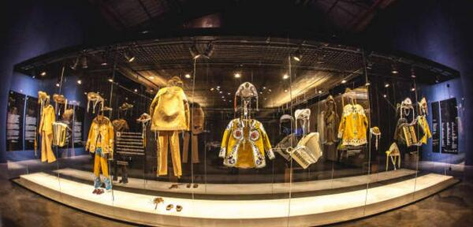
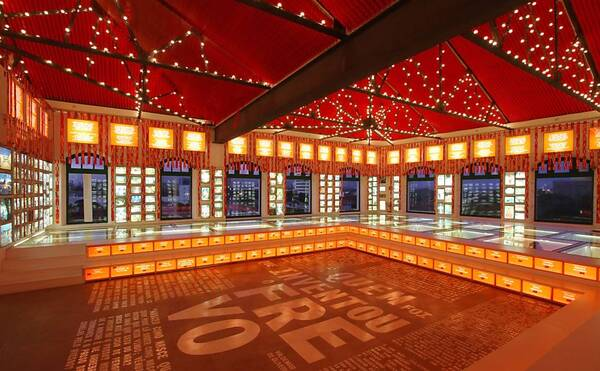

Cais do Sertão: O Coração do Sertão Nordestino
No Cais do Sertão, mergulhe nas profundezas do sertão nordestino. Este museu interativo celebra a vida e obra de grandes personalidades, como o renomado escritor Ariano Suassuna.
Exposições fascinantes, experiências interativas e performances ao vivo transportam os visitantes para o coração pulsante do sertão, explorando sua cultura, história e tradições. A diversidade e autenticidade do Nordeste ganham vida neste espaço cultural singular.
Paço do Frevo: Onde o Ritmo Encontra a Alma
Embarque numa jornada pelo universo encantador do frevo no Paço do Frevo. Este centro cultural é dedicado à preservação e celebração desse vibrante gênero musical e dança, verdadeiro símbolo da cultura pernambucana.
Com exposições interativas, apresentações ao vivo e a oportunidade de aprender os passos desse ritmo contagioso, o Paço do Frevo oferece uma imersão autêntica na alegria e na energia do Carnaval pernambucano.
